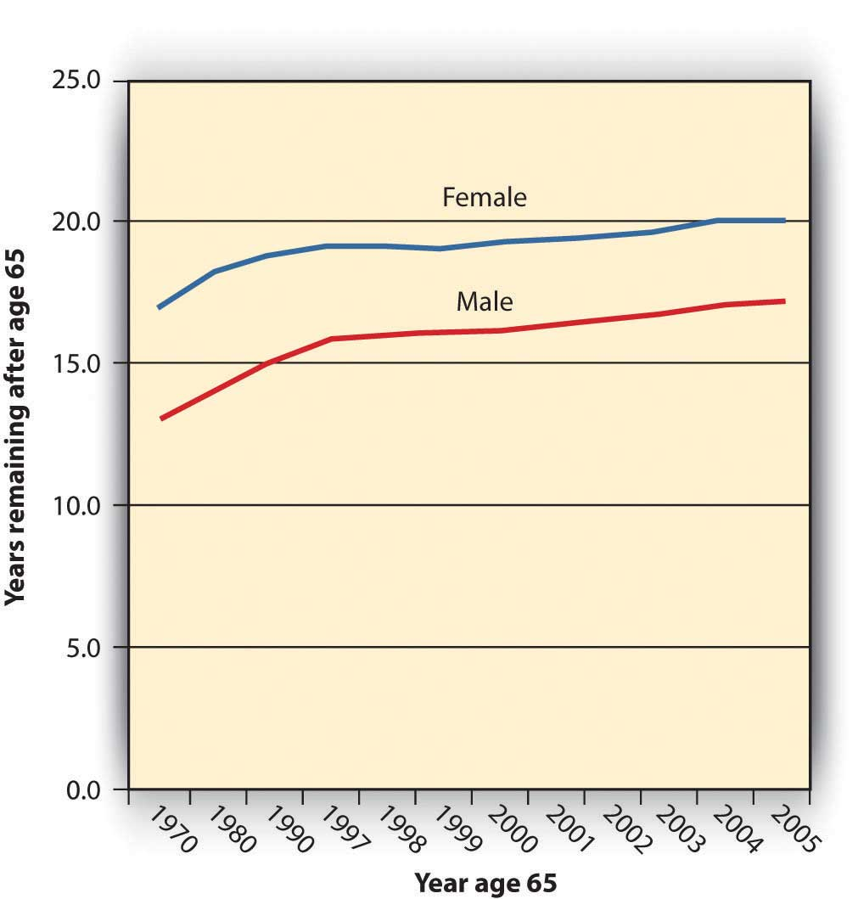
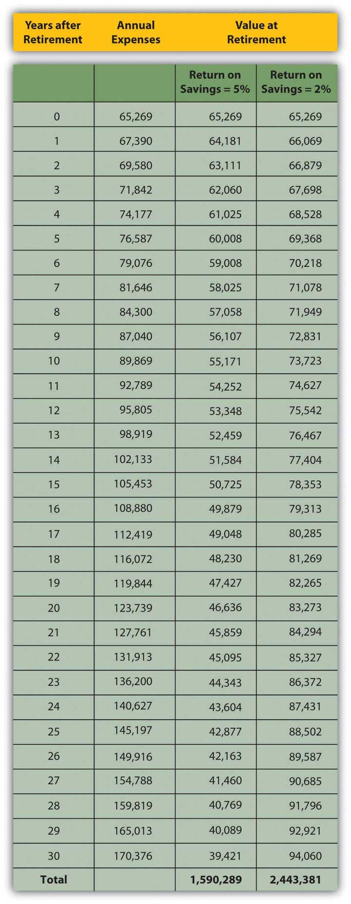

Retirement planning involves the same steps as any other personal planning: figure out where you’d like to be and then figure out how to get there from where you are. More formally, the first step is to define your goals, even if they are no more specific than “I want to be able to afford a nice life after I stop getting a paycheck.” But what is a “nice life,” and how will you pay for it?
It may seem impossible or futile to try to project your retirement needs so far from retirement given that there are so many uncertainties in life and retirement may be far away. But that shouldn’t keep you from saving. You can try to save as much as possible for now, with the idea that your plans will clarify as you get closer to your retirement, so whatever money you have saved will give you a head start.
Chris and Sam were young urban professionals until their children were born. Tired of pushing strollers through the subways, they bought a home in the suburbs. They are happy to provide a more idyllic lifestyle for their kids but miss the “buzz” and convenience of their urban lifestyle. When their children are on their own and Chris and Sam are ready to retire, they would like to sell their home and move back into the city.
Chris and Sam are planning to use the value of their house to finance a condo in the city, but they also know that real estate prices are often higher in the more desirable urban areas and that living expenses may be higher in the future. Now in their midthirties, Chris and Sam are planning to retire in thirty years.
Chris and Sam need to project how much money they will need to have saved by the time they wish to retire. To do that, they need to project both their future capital needs (to buy the condo) and their future living expense in retirement. They also need to project how long they may live after retirement, or how many years’ worth of living expenses they will need, so that they won’t outlive their savings.
They know that they have thirty years over which to save this money. They also know, as explained in Chapter 4 "Evaluating Choices: Time, Risk, and Value", that time affects value. Thus, Sam and Chris need to project the rate of compounding for their savings, or the rate at which time will affect the value of their money.
To estimate required savings, in other words, you need to estimate the following:
As difficult as these estimations seem, because it is a long time until retirement and a lot can happen in the meantime, you can start by using what you know about the present.
One approach is to assume that your current living expenses will remain about the same in the future. Given that over the long run, inflation affects the purchasing power of your income, you factor in the effect inflation may have so that your purchasing power remains the same.
For example, say your living expenses are around $25,000 per year and you’d like to have that amount of purchasing power in retirement as well. Assuming your costs of living remain constant, if you are thirty years from retirement, how much will you be spending on living expenses then?
The overall average annual rate of inflation in the United States is about 3.25 percent,The average is calculated over the period from 1913 to 2009. U.S. Bureau of Labor Statistics, http://www.bls.gov/cpi/ (accessed May 1, 2009). so you would have to spend $25,000 × (1 + 0.0325)30 = $65,269 per year to maintain your standard of living thirty years from now. Put another way, thirty years from now, one dollar will buy only about thirty-eight cents worth of today’s expenses. This calculation comes from the relationship of time and value, studied in Chapter 4 "Evaluating Choices: Time, Risk, and Value". In this case, $25,000 is the present value of your expenses, and you are looking for the future value, given that your expenses will appreciate at a rate of 3.25 percent per year for thirty years.
As you can see, you would need about two-and-a-half times your current spending just to live the life you live now. Fortunately, your savings won’t be just “sitting there” during that time. They, too, will be compounding to keep up with your needs.
You may use your current expenses as a basis to project a more or less expensive lifestyle after retirement. You may anticipate expenses dropping with fewer household members and dependents, for example, after your children have grown. Or you may wish to spend more and live a more comfortable life, doing things you’ve always wanted to do. In any case, your current level of spending can be a starting point for your estimates.
How much you need to have saved to support your annual living expenses after retirement depends on how long those expenses continue or how long you’ll live after retirement. In the United States, life expectancy at age sixty-five has increased dramatically in the last century, from twelve to seventeen years for males and from twelve to twenty years for females, due to increased access to health care, medical advances, and healthier lives before age sixty-five.U.S. Department of Health and Human Services, “Health, United States, 2008: With Special Feature on the Health of Young Adults (Health United States),” Center for Disease Control, National Center for Health Statistics, 2008. Figure 11.2 "Life Expectancy at Age 65 in the United States, 1970–2005" shows the data from 1970 to 2005.
Figure 11.2 Life Expectancy at Age 65 in the United States, 1970–2005
If life expectancy continues to increase at these rates, in thirty years your life expectancy at age sixty-five could be twenty-eight to thirty years. In that case, your retirement savings will have to provide for your living expenses for as long as thirty years. Put another way, at age thirty-five you have thirty years to save enough to support you for thirty years after that.
You can use what you know about time and value (from Chapter 4 "Evaluating Choices: Time, Risk, and Value") to estimate the amount you would need to have saved up by the time you retire. Your annual expenses in retirement are really a series of cash flows that will grow by the rate of inflation. At the same time, your savings will grow by your rate of return, even after you are making withdrawals to cover your expenses.
Say that when you retire, you have your retirement funds invested so they are earning a return of 5 percent per year. Assume an annual inflation rate of 3.25 percent and that your annual expenses when you retire are $65,269 (as adjusted for inflation in the example above).
Figure 11.3 "Estimating Annual Expenses and Savings Needed at Retirement" shows what your situation would look like.
Figure 11.3 Estimating Annual Expenses and Savings Needed at Retirement
The amount you need at retirement varies with the expected rate of return on your savings. While you are retired, you will be drawing income from your savings, but your remaining savings will still be earning a return. The more return your savings can earn while you are retired, the less you have to have saved by retirement. The less return your savings can earn in retirement, the more you need to have saved before retirement.
In Figure 11.3 "Estimating Annual Expenses and Savings Needed at Retirement", the total amount needed at retirement is only about $1.5 million if your remaining savings will earn 5 percent while you are retired, but if that rate of return is only 2 percent, you would have to begin retirement with almost $2.5 million.
Let’s assume your return on savings is 5 percent. If you want to have $1,590,289 in thirty years when you retire, you could deposit $367,957 today and just let it compound for thirty years without a withdrawal. But if you plan to make an annual investment in your retirement savings, how much would that have to be?
In the example above, if you make regular annual deposits into your retirement account for the next thirty years, each deposit would have to be $23,936, assuming that your account will earn 5 percent for in thirty years. If the rate of return for your savings is less, you would have to save more to have more at retirement. If your retirement savings can earn only 2 percent, for example, you would have to deposit $60,229 per year to have $2,443,361 when you retire. Your retirement account grows through your contributions and through its own earnings. The more your account can earn before you retire, the less you will have to contribute to it. On the other hand, the more you can contribute to it, the less it has to earn.
The time you have to save until retirement can make a big difference to the amount you must save every year. The longer the time you have to save, the less you have to save each year to reach your goal. Figure 11.4 "Time to Retirement and Annual Savings Required" shows this idea as applied to the example above, assuming a 5 percent return on savings and a goal of $1,590,289.
Figure 11.4 Time to Retirement and Annual Savings Required

The longer the time you have to save, the sooner you start saving, and the less you need to save each year. Chris and Sam are already in their thirties, so they figure they have thirty years to save for retirement. Had they started in their twenties and had forty years until retirement, they would not have to save so much each year. If they wait until they are around fifty, they will have to save a lot more each year. The more you have to save, the less disposable income you will have to spend on current living expenses, making it harder to save. Clearly, saving early and regularly is the superior strategy.
When you make these calculations, be aware that you are using estimates to figure the money you’ll need at retirement. You use the expected inflation rate, based on its historic average, to estimate annual expenses, historical statistics on life expectancy to estimate the duration of your retirement, and an estimate of future savings returns. Estimates must be adjusted because things change. As you progress toward retirement, you’ll want to reevaluate these numbers at least annually to be sure you are still saving enough.
To estimate required savings, you need to estimate
You must save more for retirement if